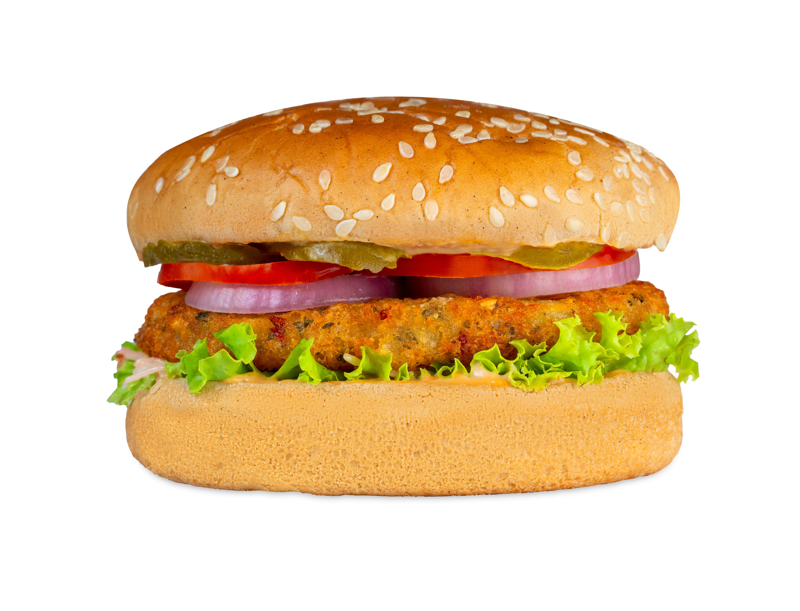

Home
Burger

Description:
The above image depicts a classic vegetarian burger centered around a spiced potato patty, a staple in Indian fast food.
Given that India has a significant vegetarian population, this specific burger is a popular alternative to meat-based options, replacing a traditional beef or chicken patty with a breaded aloo tikki.
The burger is layered with fresh local favorites like sliced red onions and tomatoes, accented by a creamy, spicy sauce that caters to the regional palate.
This combination of a crispy, herb-flecked potato base and a toasted sesame bun represents a successful fusion of Western fast-food formats with traditional Indian culinary preferences.
Ingredients
- Sesame Seed Bun
- Aloo Tikki Patty
- Lettuce
- Onions
- Tomatoes
- Mayonnaise
- Tomato ketchup
Steps:
- Prepare the Bun: Slice a sesame seed bun in half and toast both sides until they are lightly golden.
- Apply Sauces: Spread a layer of mayonnaise and tomato ketchup on the bottom half of the bun.
- Add Greens: Place a fresh layer of lettuce over the sauces to provide a crisp base.
- Add the Main Component: Position a hot, crispy aloo tikki patty directly on top of the lettuce.
- Layer Fresh Vegetables: Arrange slices of onions and tomatoes on top of the patty.
- Complete the Burger: Place the top half of the sesame seed bun over the vegetables to finish the assembly.